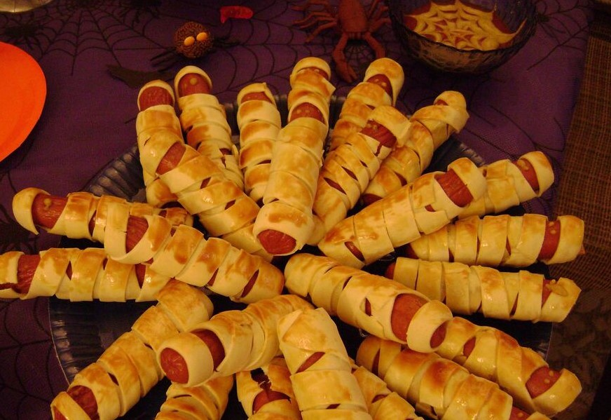

Ingredientes:
- - 1 kg salsicha de peru (pode ser de Hot Dog);
- - 1 pacote de massa fresca em rolo para pastel;
- - 1 gema;
- - Mostarda;
- - Catchup.
Modo de preparo:
- 1 - Lave bem as salsichas;
- 2 - Corte a massa frescar em tirinhas de diversas larguras;
- 3 - Enrole irregularmente cada salsicha com as tirinhas de massa, como se fosse uma múmia, deixando um espaço em uma das extremidades para fazer os olhinhos;
- 4 - Em uma assadeira levemente untada, disponha os enroladinhos com uma pequena distância (1 cm) para não colarem;
- 5 - Pincele a gema em cima de cada múmia e deixe no forno preaquecido até dourar;
- 6 - Após retirar do forno, arrume-as em um refratário e faça dois pingos de mostarda no espaço disposto para os olhinhos;
- 7 - Encha um potinho com catchup e fala círculos concêntricos de mostarda. Com um palito, puxe o catchup do centro para a extremidade, criando aspecto de teia de aranha.